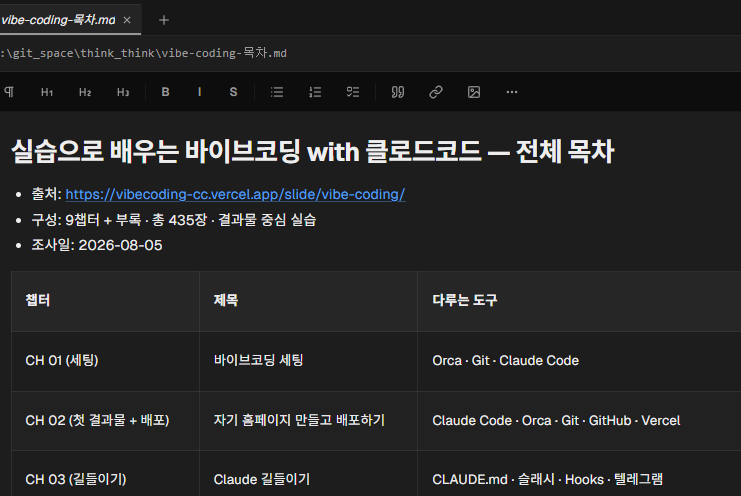

브라우저 크롤링 — Claude가 웹을 직접 돌아다닌다
앞 덱에서 "API가 없으면?"으로 끝났죠 — 답이 이것입니다. 6장에서 배운 MCP로 브라우저(Playwright)를 꽂아 진짜 웹을 긁어옵니다. 먼저 다 같이 이 강의 사이트를 크롤링해 복습 치트시트를 만들고, 그다음 각자 관심 소재로 한 번 더.
이번에 꽂을 건 — Playwright
Playwright — 브라우저 자동화 도구
웹 브라우저를 사람 대신 움직이는 도구. 이걸 MCP로 꽂으면 — Claude가 진짜 브라우저를 직접 조종합니다.
- 페이지 열기 · 클릭 · 스크롤
- 화면의 글·이미지를 읽어 오기
- 다음 페이지로 넘기며 정보 수집
- 스크린샷 찍기
playwright MCP 연결 도와줘.
실제로는 이런 일이 일어납니다
claude mcp add playwright -- npx @playwright/mcp@latestclaude mcp list— playwright 보이면 성공
부탁 한 마디면 명령 찾기부터 연결 확인까지 Claude가 대신합니다 — 직접 치고 싶을 때만 오른쪽 명령을 그대로.
Claude가 — 직접 웹을 돌아다닌다.
브라우저 MCP를 꽂으면, Claude가 진짜 브라우저를 열어 페이지를 보고·넘기고·정보를 긁어옵니다. 흩어진 웹 정보를 한 번에 모아오는 — "크롤링"입니다.
브라우저 MCP — Claude가 진짜 브라우저를 연다
무엇을 하나
- 실제 브라우저 창을 열어 페이지를 본다
- 스크롤·클릭·다음 페이지로 넘기기
- 화면의 정보를 읽어 와 정리
대표 도구는 Playwright — 연결은 Claude에게 물어보면 됩니다.
가볍게 — 규칙은 지키며
- 공개된 정보를, 가벼운 양만 — 부담 없이
- 로그인 담벼락 안쪽·대량 수집은 피하기
- 사이트 이용 규칙을 존중
이번 실습은 "이게 되네"를 느끼는 게 목적 — 작게.
크롤링이 막히는 사이트도 있습니다 — 안 되면 다른 사이트로. "이 사이트에서 막혀"라고 하면 Claude가 대안을 찾아줍니다.
지금 보는 이 강의 사이트를 크롤링한다.
첫 소재는 — 여러분이 지금 보고 있는 이 과정 사이트. 브라우저 MCP로 목차를 열어, 각 챕터의 제목·다루는 도구·슬라이드 수를 긁어 나만의 복습 치트시트로 만듭니다.
목차를 열어 — 챕터·도구·슬라이드 수를 표로
5단계
- 브라우저 MCP(Playwright) 연결
- 강사가 안내하는 이 과정 주소를 Claude에게
- "목차를 열어 각 챕터의 제목·도구·슬라이드 수를 표로"
- (심화) "각 챕터 페이지까지 들어가 덱 제목도 모아줘"
- "markdown 표로 저장해줘" → 복습 치트시트
https://vibecoding-cc.vercel.app/slide/vibe-coding/ 목차를 열어서, 각 챕터의 제목·다루는 도구·슬라이드 수를 표로 정리해줘
markdown 표로 저장해줘
내가 아는 내용이라 표가 맞는지 바로 검증됩니다 — 틀린 칸이 있으면 "○장 슬라이드 수 다시 확인해줘".
완성된 치트시트 — 화면과 md 원문을 나란히

브라우저가 사람 손 없이 페이지를 넘기고 — 결과가 표 한 장으로. "어디서 뭘 배웠지?" 할 때 바로 꺼내 보는 내가 만든 요약본입니다.
자유 소재 — 끌리는 것 하나 골라
가격 비교
여러 쇼핑몰의 같은 상품 가격을 한 표로. 예: danawa.com
관심 뉴스 모으기
키워드로 여러 사이트의 헤드라인을 수집. 예: news.naver.com
채용·지원사업 공고
조건에 맞는 공고만 골라 목록으로. 예: k-startup.go.kr · wanted.co.kr
평점·후기 정리
흩어진 리뷰를 모아 한눈에 비교. 예: yes24.com 도서 리뷰
중고·부동산 목록
관심 매물 목록을 긁어 표로. 예: joongna.com
스크린샷 모으기
여러 페이지의 화면을 한 번에 캡처. 예: 자주 가는 사이트 3곳.
공통 예제를 해봤다면 — 이제 "내가 평소 손으로 찾아보던 것"으로 한 번 더. 그게 가장 좋은 소재입니다.
크롤링 — 공통 하나 + 자유 하나
작업 폴더에서 브라우저 MCP 연결 — c:\lecture\crawl~/lecture/crawl 폴더에서, Claude에게 "브라우저 MCP 연결 명령 알려줘"
공통 — 이 강의 사이트 크롤 — vibecoding-cc.vercel.app 목차 → 챕터·도구·슬라이드 수 표 → cheatsheet.md 저장
자유 — 관심 소재 하나 — 가격·뉴스·후기 등, "이 정보를 모아서 표로 정리해줘"
결과 확인 + 다듬기 — "정렬해줘" "이 항목도 추가" — 마음에 들 때까지
막히면 다른 사이트로 — 크롤링은 사이트마다 사정이 다릅니다. 핵심은 "Claude가 웹을 직접 다닌다"는 감각.
Claude가 — 웹을 직접 긁어온다
MCP로 브라우저를 꽂으니 — Claude가 진짜 웹을 돌아다니며 정보를 모아 표로 정리했습니다. 이 강의 사이트로 복습 치트시트까지 만들었습니다.